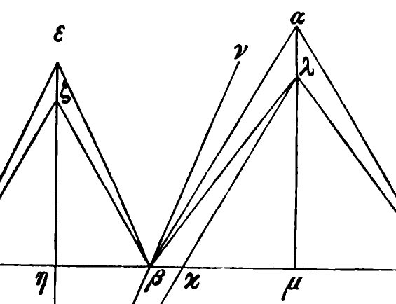

Propositions 3–4: Area of the Circle & Triangle Construction Lemma¶
Synagoge Book V, Chs. 6–10 (Hultsch I, pp. 312–318) · Original English Translation
6. 3. Now that the rectangle contained by the circumference of the circle and its radius is double the circle
f. 0347 · p. 314
step Archimedes has demonstrated; nevertheless this shall also be proved next, so that we may not stand in need of the Archimedean treatise for the sake of this single theorem alone.
For let \(AB\Gamma\Delta\) be a circle, and let region \(Z\) be half of the rectangle contained by its circumference and its radius; I say that region \(Z\) equals circle \(AB\Gamma\Delta\).
step 7. For first, if possible, let it be less.
Then it is possible, following the method in the twelfth book of the Elements ([XII.2]), to inscribe in circle \(AB\Gamma\Delta\) a polygon such that the inscribed polygon is greater than region \(Z\), if a square be first inscribed in the circle and the arcs of the remaining segments be continually bisected until segments remain less than the excess by which circle \(AB\Gamma\Delta\) exceeds region \(Z\).
Let it be inscribed, and let it be \(AB\Gamma\Delta E\), and from center \(H\) let perpendicular \(H\Theta\) be drawn to one side of polygon \(AB\Gamma\Delta E\), namely \(\Gamma\Delta\). Now since the circumference of circle \(AB\Gamma\Delta\) is greater than the perimeter of the polygon \(AB\Gamma\Delta E\) of whatever number of sides,
and the radius is greater than \(H\Theta\), the rectangle contained by the circumference of circle \(AB\Gamma\Delta\) and the radius is greater than the rectangle contained by the perimeter of polygon \(AB\Gamma\Delta E\) and \(H\Theta\). Taking halves, region \(Z\) is greater than polygon \(AB\Gamma\Delta E\), which is impossible;
for it was supposed less; therefore circle \(AB\Gamma\Delta\) is not greater than region \(Z\).
step 8. I say further that neither is it less. For if possible, let it be less; then it is possible to circumscribe a polygon about circle \(AB\Gamma\Delta\) such that region \(Z\) is greater than the circumscribed polygon,
if a square be first circumscribed about the circle and, the remaining arcs being continually bisected, tangents be drawn
f. 0349 · p. 316
step until segments of the outer figures be left over that are less than the excess by which region \(Z\) exceeds circle \(AB\Gamma\Delta\); for that this is possible has been proved.
Let the polygon therefore be circumscribed as stated, and let it be \(K\Lambda MN\Xi\), and from center \(H\) let \(HO\) be joined to one of the points of contact, namely \(O\). Since the perimeter of polygon \(K\Lambda MN\Xi\) is greater than the circumference of circle \(AB\Gamma\Delta\),
the rectangle contained by the perimeter of polygon \(K\Lambda MN\Xi\) and \(HO\) is greater than the rectangle contained by the circumference of circle \(AB\Gamma\Delta\) and \(HO\). Taking halves, polygon \(K\Lambda MN\Xi\) is greater than region \(Z\), which is impossible; for it was supposed less. Therefore region \(Z\) is not greater than circle \(AB\Gamma\Delta\).
And it was shown that neither is it less; therefore it is equal. And the rectangle contained by the circumference of circle \(AB\Gamma\Delta\) and the radius of the circle is double region \(Z\).
step 9. 4. Now the circle becomes greater not only than regular plane figures, which are both equilateral and equiangular,
but also than unequilateral and non-equiangular figures, whenever it has the same perimeter as they. For it will be proved that among isoperimetric polygonal figures having the same number of sides, the greatest is both equilateral and equiangular. First, then, we shall set down beforehand the theorems assumed for its demonstration.
step 10. Let \(AB\Gamma\) be a triangle having \(AB\) greater than \(B\Gamma\), and let \(E\) be a straight line which is less than \(AB\) and greater than \(B\Gamma\): it is possible to construct upon \(A\Gamma\) two straight lines such that both together equal \(AB\) and \(B\Gamma\), and one of them equals \(E\).
f. 0351 · p. 318
step For let \(Z\) be the amount by which \(AB\) and \(B\Gamma\) exceed \(E\); then \(Z\) is less than \(AB\) (because \(AB\) and \(B\Gamma\) together equal \(E\) and \(Z\), of which \(E\) is greater than \(\Gamma B\)),
and greater than \(\Gamma B\) (since again \(AB\) and \(B\Gamma\) together equal \(E\) and \(Z\), of which \(E\) is less than \(AB\)). Since, then, \(AB\) and \(B\Gamma\) are greater than \(A\Gamma\), \(E\) and \(Z\) are therefore also greater than \(A\Gamma\).
And since \(A\Gamma\) and \(\Gamma B\) are greater than \(AB\), and \(E\) is greater than \(\Gamma B\) while \(Z\) is less than \(AB\), far more are \(A\Gamma\) and \(E\) greater than \(Z\). Likewise, since \(A\Gamma\) and \(\Gamma B\) are greater than \(AB\),
while \(Z\) is greater than \(\Gamma B\) and \(E\) is less than \(AB\), far more are \(A\Gamma\) and \(Z\) greater than \(E\). Therefore it is possible to construct a triangle from \(A\Gamma\), \(E\), and \(Z\). Let \(A\Gamma\Delta\) be constructed [lacuna] [and it is manifest that if \(E\) and \(Z\) are equal, triangle \(A\Gamma\Delta\) will be isosceles, while if unequal, the greater of them will equal \(\Gamma\Delta\)].

